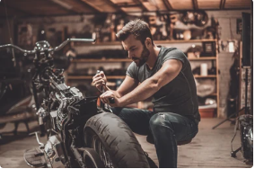
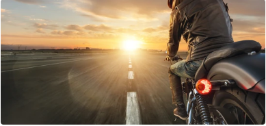
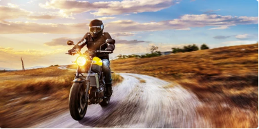
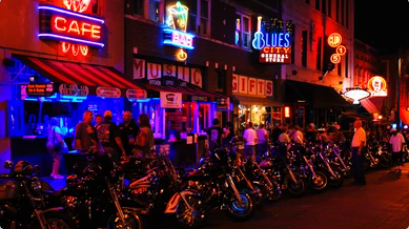
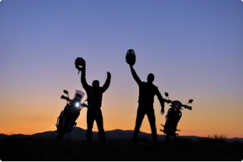
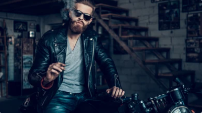
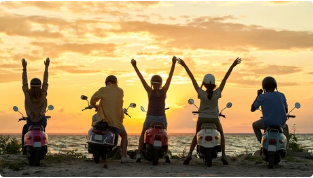

Amor por motos
O estilo de vida de motoqueiro atrai muitas pessoas devido a uma combinação única de liberdade, aventura e camaradagem que ele oferece. Essa forma de viver vai muito além de simplesmente andar de moto; ela se conecta com a essência de liberdade individual e uma busca por emoções autênticas. Existem várias razões pelas quais muitos são atraídos por esse estilo de vida emocionante e fascinante.
Liberdade na Estrada:
Uma das razões mais convincentes para abraçar o estilo de vida de motoqueiro é a sensação de liberdade que ele proporciona. Nas estradas abertas, os motociclistas sentem uma conexão direta com o ambiente ao seu redor, sem as barreiras físicas de um carro. A sensação de vento no rosto e a capacidade de escolher o caminho enquanto exploram paisagens diversas são experiências que muitos acham revigorantes.
Aventura e Exploração:
Pilotar uma moto é mais do que apenas se locomover; é uma aventura contínua. Os motociclistas são atraídos pela oportunidade de explorar novos lugares, descobrir estradas sinuosas e se aventurar por trilhas menos percorridas. A sensação de descoberta e aventureirismo que acompanham essa exploração são componentes emocionantes do estilo de vida.
Camaradagem e Comunidade:
A comunidade de motociclistas é conhecida por sua camaradagem e senso de pertencimento. Eventos, encontros e passeios reúnem pessoas que compartilham uma paixão comum por motos. A troca de histórias, dicas de pilotagem e apoio mútuo criam laços significativos entre os membros dessa comunidade diversificada.
Desafio Pessoal:
Pilotar uma moto exige habilidade e atenção constantes. Aqueles que abraçam esse estilo de vida são atraídos pelo desafio de dominar a arte da pilotagem e aprimorar suas habilidades ao longo do tempo. A superação de obstáculos e a conquista de novos níveis de competência proporcionam um senso de realização pessoal.
Estilo e Expressão Pessoal:
As motos muitas vezes são vistas como extensões da personalidade de seus donos. A variedade de modelos, marcas e customizações disponíveis permite que os motociclistas expressem sua individualidade e estilo pessoal de maneiras únicas. A escolha de uma moto e seu design podem ser uma forma de autoexpressão criativa.
Desligamento do Estresse:
Pilotar uma moto exige foco e presença mental, o que muitas vezes pode ser uma maneira eficaz de se desconectar do estresse cotidiano. A concentração exigida pela pilotagem pode funcionar como uma espécie de meditação em movimento, proporcionando uma pausa bem-vinda das preocupações diárias.
Em resumo:
O estilo de vida de motoqueiro atrai muitos devido à sensação de liberdade, aventura, camaradagem e desafio pessoal que oferece. Aqueles que escolhem esse caminho encontram uma maneira emocionante e recompensadora de explorar o mundo, expressar sua individualidade e se conectar com uma comunidade apaixonada. No coração desse estilo de vida está a busca por uma jornada autêntica, onde as estradas se transformam em histórias e as experiências se tornam memórias duradouras.